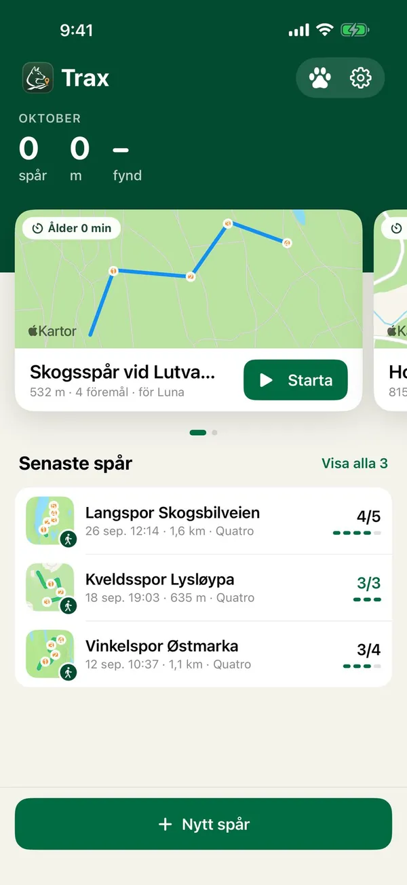
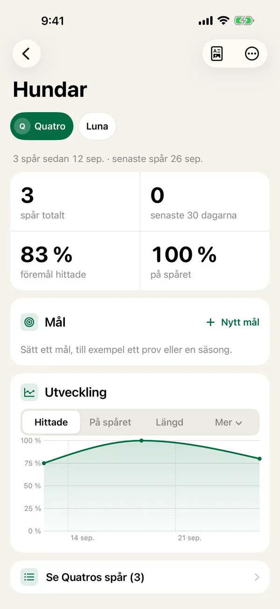
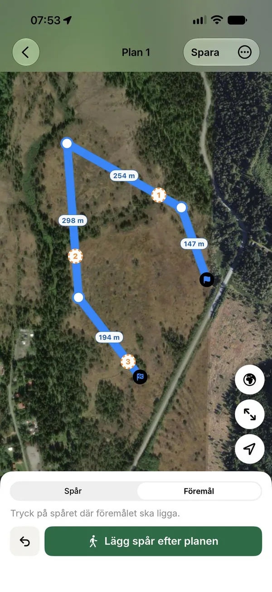
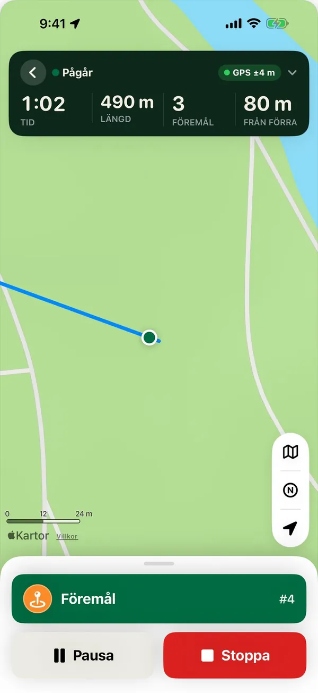
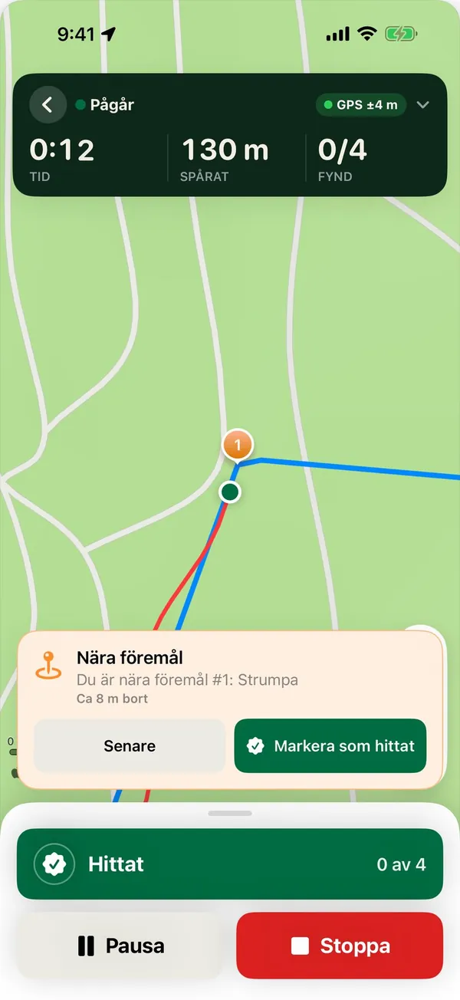
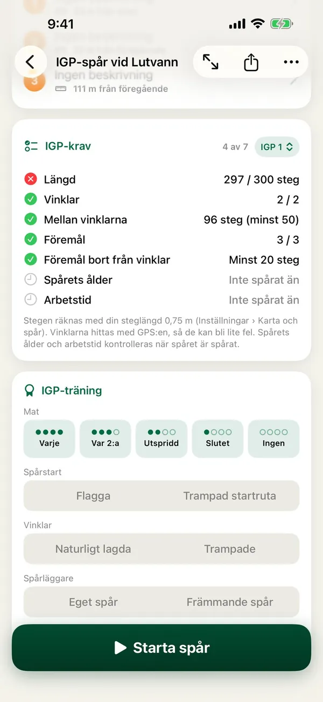
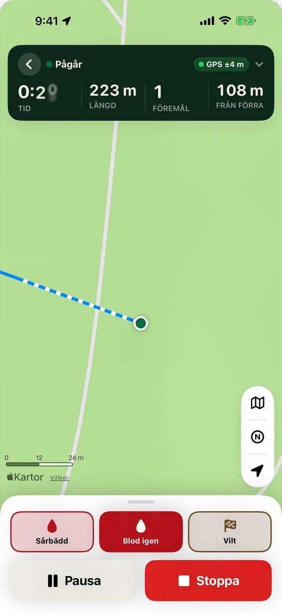
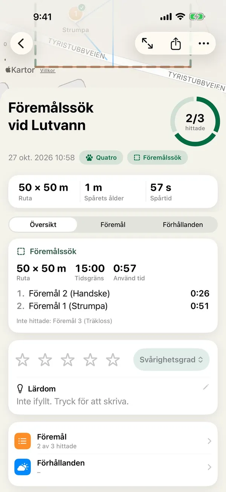
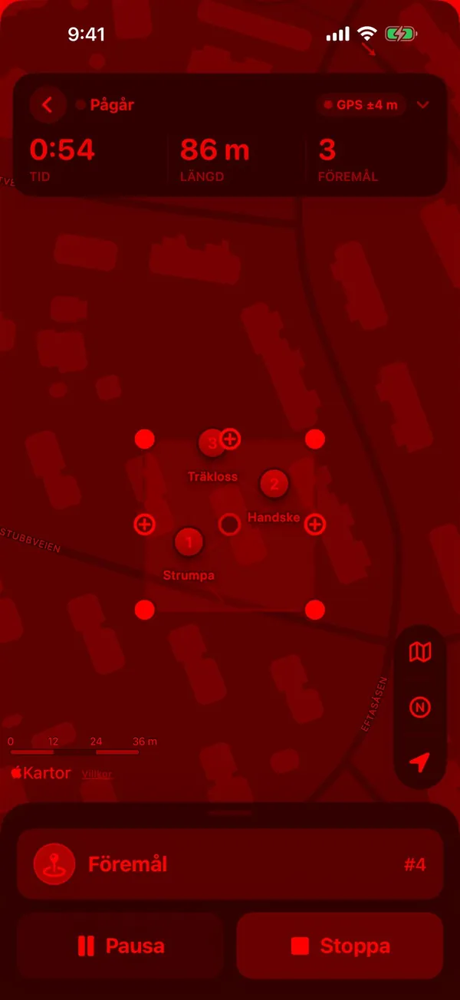

iPhone
Spårplaner
Planera träningsdagen hemma. Rita spåren på kartan, samla dem i en grupp och se direkt om något korsar.
Trax registrerar spåret medan du lägger det, säger till när hunden närmar sig föremålen och visar efteråt hur bra hunden höll spåret.


149 kr, en gång. Ingen prenumeration, inget konto, ingen reklam.



Så fungerar det
Rita sträckor och föremål på kartan hemma och skicka planen till spårläggaren.

Tryck på ”Föremål” där du lägger något. Trax registrerar rutten med GPS, räknar spårets ålder och aviserar när spåret är klart.

Ha telefonen i fickan. Du hör när ni närmar er ett föremål, och telefonen vibrerar om ni kommer bort från spåret.

Spela upp spåret, se avvikelsen längs rutten och hur många föremål hunden hittade. Över tid ser du utvecklingen för varje hund.
Funktioner
Spår, IGP-spår, viltspår, föremålssök och ytsök i samma app.
Planera träningsdagen hemma. Rita spåren på kartan, samla dem i en grupp och se direkt om något korsar.
Uppspelning, avvikelse, föremål och förhållanden på ett ställe.
Nivå från IGP-V till FH 3, mall på kartan och steg mot kravet.

Sårbädd, blod igen, vilt och flyktriktning.

Rita rutan, sätt en tidsgräns och se tiden för varje fynd.

Nyckeltal, mål, träningsmoment och utvecklingen för varje hund.
Rött ljus på skärmen när du tränar i mörker.

Gjord av någon som själv tränar spår
”Jag tränar hund nästan varje dag, och spår är något av det roligaste jag gör.”
Trax gjorde jag för att jag ville ha en enkel app som gör precis det spårarbetet behöver. Jag använder den själv när jag tränar spår med min hund, och arbetar hela tiden med att förbättra appen så att den täcker alla behov. Jag svarar på alla frågor själv.

Pris
149kr
Jag svarar på alla frågor själv, oftast inom två arbetsdagar.